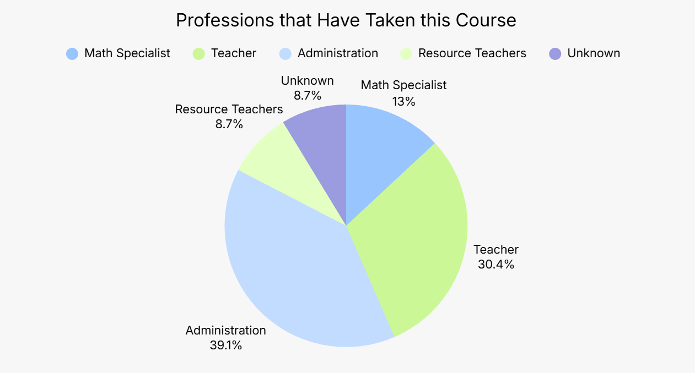
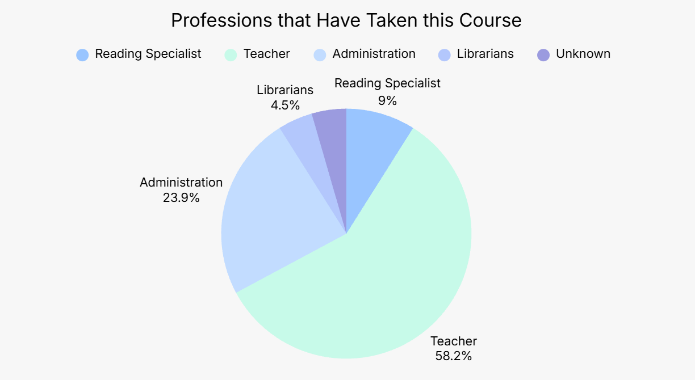

Data Visualization
Transforming education data into clear, meaningful, and actionable information.


Image Description
The images above display the pie charts I created for the Quantile and LEDDI Canvas courses. Each chart illustrates the types of educators who completed the respective course, with participants categorized into five educator groups based on the course taken. I also created charts for the Lexile course; however, we ultimately decided not to include them because the data did not provide meaningful insights for marketing purposes. I designed the visualizations in Canva and incorporated the selected pie charts into the one-page information sheets for the Quantile and LEDDI courses. These visuals helped communicate the diversity of educators participating in each course to prospective students and administrators.
Project Purpose
Following the development of the one-page information sheets for the Lexile, LEDDI, and Quantile Canvas courses, I identified an opportunity to incorporate visual data metrics to better communicate the diversity of disciplines represented among course participants. These visuals were intended to help prospective students and administrators understand the range of educational backgrounds and fields represented in each course. To determine the most effective way to communicate this information, I created and evaluated multiple graphs and tables, selecting the visualizations with the strongest potential to clearly and effectively highlight participant diversity. The graphs featured above were ultimately incorporated into the one-page information sheets.